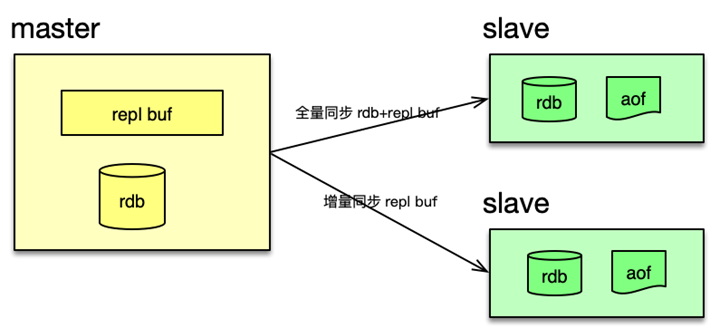

- 00 开篇寄语：缓存，你真的用对了吗？.md
- 01 业务数据访问性能太低怎么办？.md
- 02 如何根据业务来选择缓存模式和组件？.md
- 03 设计缓存架构时需要考量哪些因素？.md
- 04 缓存失效、穿透和雪崩问题怎么处理？.md
- 05 缓存数据不一致和并发竞争怎么处理？.md
- 06 Hot Key和Big Key引发的问题怎么应对？.md
- 07 MC为何是应用最广泛的缓存组件？.md
- 08 MC系统架构是如何布局的？.md
- 09 MC是如何使用多线程和状态机来处理请求命令的？.md
- 10 MC是怎么定位key的.md
- 11 MC如何淘汰冷key和失效key.md
- 12 为何MC能长期维持高性能读写？.md
- 13 如何完整学习MC协议及优化client访问？.md
- 14 大数据时代，MC如何应对新的常见问题？.md
- 15 如何深入理解、应用及扩展 Twemproxy？.md
- 16 常用的缓存组件Redis是如何运行的？.md
- 17 如何理解、选择并使用Redis的核心数据类型？.md
- 18 Redis协议的请求和响应有哪些“套路”可循？.md
- 19 Redis系统架构中各个处理模块是干什么的？.md
- 20 Redis如何处理文件事件和时间事件？.md
- 21 Redis读取请求数据后，如何进行协议解析和处理.md
- 22 怎么认识和应用Redis内部数据结构？.md
- 23 Redis是如何淘汰key的？.md
- 24 Redis崩溃后，如何进行数据恢复的？.md
- 25 Redis是如何处理容易超时的系统调用的？.md
- 26 如何大幅成倍提升Redis处理性能？.md
- 27 Redis是如何进行主从复制的？.md
- 28 如何构建一个高性能、易扩展的Redis集群？.md
- 29 从容应对亿级QPS访问，Redis还缺少什么？.md
- 30 面对海量数据，为什么无法设计出完美的分布式缓存体系？.md
- 31 如何设计足够可靠的分布式缓存体系，以满足大中型移动互联网系统的需要？.md
- 32 一个典型的分布式缓存系统是什么样的？.md
- 33 如何为秒杀系统设计缓存体系？.md
- 34 如何为海量计数场景设计缓存体系？.md
- 35 如何为社交feed场景设计缓存体系？.md
27 Redis是如何进行主从复制的？
本课时我们主要学习 Redis 复制原理，以及复制分析等内容。
Redis 复制原理
为了避免单点故障，数据存储需要进行多副本构建。同时由于 Redis 的核心操作是单线程模型的，单个 Redis 实例能处理的请求 TPS 有限。因此 Redis 自面世起，基本就提供了复制功能，而且对复制策略不断进行优化。

通过数据复制，Redis 的一个 master 可以挂载多个 slave，而 slave 下还可以挂载多个 slave，形成多层嵌套结构。所有写操作都在 master 实例中进行，master 执行完毕后，将写指令分发给挂在自己下面的 slave 节点。slave 节点下如果有嵌套的 slave，会将收到的写指令进一步分发给挂在自己下面的 slave。通过多个 slave，Redis 的节点数据就可以实现多副本保存，任何一个节点异常都不会导致数据丢失，同时多 slave 可以 N 倍提升读性能。master 只写不读，这样整个 master-slave 组合，读写能力都可以得到大幅提升。
master 在分发写请求时，同时会将写指令复制一份存入复制积压缓冲，这样当 slave 短时间断开重连时，只要 slave 的复制位置点仍然在复制积压缓冲，则可以从之前的复制位置点之后继续进行复制，提升复制效率。

主库 master 和从库 slave 之间通过复制 id 进行匹配，避免 slave 挂到错误的 master。Redis 的复制分为全量同步和增量同步。Redis 在进行全量同步时，master 会将内存数据通过 bgsave 落地到 rdb，同时，将构建 内存快照期间 的写指令，存放到复制缓冲中，当 rdb 快照构建完毕后，master 将 rdb 和复制缓冲队列中的数据全部发送给 slave，slave 完全重新创建一份数据。这个过程，对 master 的性能损耗较大，slave 构建数据的时间也比较长，而且传递 rdb 时还会占用大量带宽，对整个系统的性能和资源的访问影响都比较大。而增量复制，master 只发送 slave 上次复制位置之后的写指令，不用构建 rdb，而且传输内容非常有限，对 master、slave 的负荷影响很小，对带宽的影响可以忽略，整个系统受影响非常小。
在 Redis 2.8 之前，Redis 基本只支持全量复制。在 slave 与 master 断开连接，或 slave 重启后，都需要进行全量复制。在 2.8 版本之后，Redis 引入 psync，增加了一个复制积压缓冲，在将写指令同步给 slave 时，会同时在复制积压缓冲中也写一份。在 slave 短时断开重连后，上报master runid 及复制偏移量。如果 runid 与 master 一致，且偏移量仍然在 master 的复制缓冲积压中，则 master 进行增量同步。
但如果 slave 重启后，master runid 会丢失，或者切换 master 后，runid 会变化，仍然需要全量同步。因此 Redis 自 4.0 强化了 psync，引入了 psync2。在 pysnc2 中，主从复制不再使用 runid，而使用 replid（即复制id） 来作为复制判断依据。同时 Redis 实例在构建 rdb 时，会将 replid 作为 aux 辅助信息存入 rbd。重启时，加载 rdb 时即可得到 master 的复制 id。从而在 slave 重启后仍然可以增量同步。
在 psync2 中，Redis 每个实例除了会有一个复制 id 即 replid 外，还有一个 replid2。Redis 启动后，会创建一个长度为 40 的随机字符串，作为 replid 的初值，在建立主从连接后，会用 master的 replid 替换自己的 replid。同时会用 replid2 存储上次 master 主库的 replid。这样切主时，即便 slave 汇报的复制 id 与新 master 的 replid 不同，但和新 master 的 replid2 相同，同时复制偏移仍然在复制积压缓冲区内，仍然可以实现增量复制。
Redis 复制分析
在设置 master、slave 时，首先通过配置或者命令 slaveof no one 将节点设置为主库。然后其他各个从库节点，通过 slaveof $master_ip $master_port，将其他从库挂在到 master 上。同样方法，还可以将 slave 节点挂载到已有的 slave 节点上。在准备开始数据复制时，slave 首先会主动与 master 创建连接，并上报信息。具体流程如下。

slave 创建与 master 的连接后，首先发送 ping 指令，如果 master 没有返回异常，而是返回 pong，则说明 master 可用。如果 Redis 设置了密码，slave 会发送 auth $masterauth 指令，进行鉴权。当鉴权完毕，从库就通过 replconf 发送自己的端口及 IP 给 master。接下来，slave 继续通过 replconf 发送 capa eof capa psync2 进行复制版本校验。如果 master 校验成功。从库接下来就通过 psync 将自己的复制 id、复制偏移发送给 master，正式开始准备数据同步。
主库接收到从库发来的 psync 指令后，则开始判断可以进行数据同步的方式。前面讲到，Redis 当前保存了复制 id，replid 和 replid2。如果从库发来的复制 id，与 master 的复制 id（即 replid 和 replid2）相同，并且复制偏移在复制缓冲积压中，则可以进行增量同步。master 发送 continue 响应，并返回 master 的 replid。slave 将 master 的 replid 替换为自己的 replid，并将之前的复制 id 设置为 replid2。之后，master 则可继续发送，复制偏移位置 之后的指令，给 slave，完成数据同步。
如果主库发现从库传来的复制 id 和自己的 replid、replid2 都不同，或者复制偏移不在复制积压缓冲中，则判定需要进行全量复制。master 发送 fullresync 响应，附带 replid 及复制偏移。然后， master 根据需要构建 rdb，并将 rdb 及复制缓冲发送给 slave。
对于增量复制，slave 接下来就等待接受 master 传来的复制缓冲及新增的写指令，进行数据同步。
而对于全量同步，slave 会首先进行，嵌套复制的清理工作，比如 slave 当前还有嵌套的 子slave，则该 slave 会关闭嵌套 子slave 的所有连接，并清理自己的复制积压缓冲。然后，slave 会构建临时 rdb 文件，并从 master 连接中读取 rdb 的实际数据，写入 rdb 中。在写 rdb 文件时，每写 8M，就会做一个 fsync操作， 刷新文件缓冲。当接受 rdb 完毕则将 rdb 临时文件改名为 rdb 的真正名字。
接下来，slave 会首先清空老数据，即删除本地所有 DB 中的数据，并暂时停止从 master 继续接受数据。然后，slave 就开始全力加载 rdb 恢复数据，将数据从 rdb 加载到内存。在 rdb 加载完毕后，slave 重新利用与 master 的连接 socket，创建与 master 连接的 client，并在此注册读事件，可以开始接受 master 的写指令了。此时，slave 还会将 master 的 replid 和复制偏移设为自己的复制 id 和复制偏移 offset，并将自己的 replid2 清空，因为，slave 的所有嵌套 子slave 接下来也需要进行全量复制。最后，slave 就会打开 aof 文件，在接受 master 的写指令后，执行完毕并写入到自己的 aof 中。
相比之前的 sync，psync2 优化很明显。在短时间断开连接、slave 重启、切主等多种场景，只要延迟不太久，复制偏移仍然在复制积压缓冲，均可进行增量同步。master 不用构建并发送巨大的 rdb，可以大大减轻 master 的负荷和网络带宽的开销。同时，slave 可以通过轻量的增量复制，实现数据同步，快速恢复服务，减少系统抖动。
但是，psync 依然严重依赖于复制缓冲积压，太大会占用过多内存，太小会导致频繁的全量复制。而且，由于内存限制，即便设置相对较大的复制缓冲区，在 slave 断开连接较久时，仍然很容易被复制缓冲积压冲刷，从而导致全量复制。